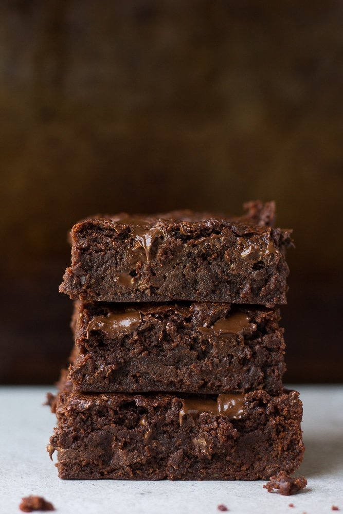

Vegan brownies

Description
Try these squidgy brownies without the dairy or eggs. They're perfect for vegans and people following a dairy-free diet and they taste utterly divine.
Ingredients
- 2 tbsp ground flaxseed
- 200g dark chocolate, roughly chopped
- 1/2 tsp coffee granules
- 80g vegan margarine, plus extra for greasing
- 125g self-raising flour
- 70g ground almonds
- 50g cocoa powder
- 1/4 tsp baking powder
- 250g golden caster sugar
- 1,5 tsp vanilla extract
Steps
- Heat the oven to 170C/150C fan/gas 3,5. Grease and line a 20cm square tin with baking parchment. Combine the flaxseed with 6 tbsp water and set aside for at least 5 mins.
- In a saucepan, melt 120g chocolate, the coffee and margarine with 60ml water on a low heat. Allow to cool slightly.
- Put the flour, almonds, cocoa, baking powder and 1/4 tsp salt in a bowl and stir to remove any lumps. Using a hand whisk, mix the sugar into the melted chocolate mixture, and beat well until smooth and glossy, ensuring all the sugar is well dissolved. Stir in the flaxseed mixture, vanilla extract and remaining chocolate, then the flour mixture. Spoon into the prepared tin.
- Bake for 35-45 mins until a skewer inserted in the middle comes out clean with moist crumbs. Allow to cool in the tin completely, then cut into squares. Store in an airtight container and eat within three days.